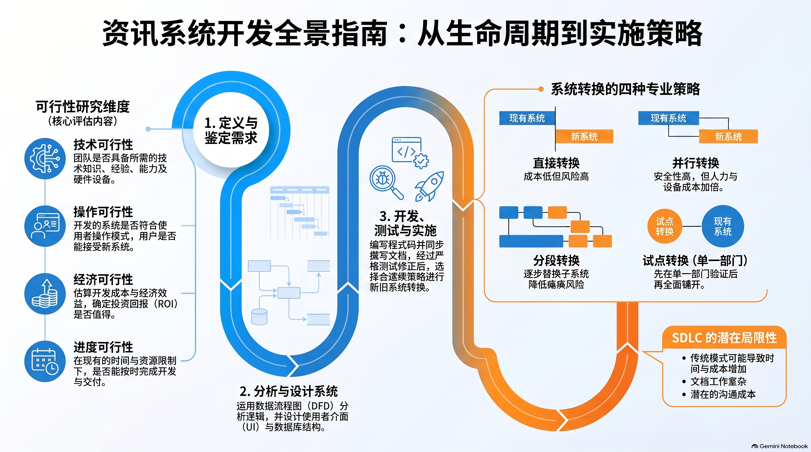

🎯 一、 单元教学与复习目标导航
1.1 课程标准核心素养
依据董教总华文独中工委会统一课程委员会《资讯科技课程标准》，本章作为第二册的开篇重磅章节，旨在培养学生系统的软件工程化思维与资讯系统分析设计能力：
- 系统工程化思维与生命周期认知：掌握资讯系统开发生命周期（SDLC）七大阶段的标准演进顺序与阶段交付物，建立全局项目管理意识；
- 可行性论证与系统分析员素养：精通技术、经济、操作与进度四大可行性评估维度，深刻理解系统分析员（SA）作为业务与技术沟通桥梁的七大核心素养；
- 结构化建模与测试方法论：熟练绘制与审查数据流程图（DFD），严守 DFD 语法规范与排查十大禁忌；精通黑盒与白盒测试差异及 6 组经典边界值测试用例设计；
- 实施演进与现代前沿视野：深刻对比直接、平行、分阶段与试点四大系统转换策略，掌握系统维护三大类型，理解资讯系统局限性、无障碍设计及大数据与 AI 赋能前景。
1.2 师生教学达成清单 (Checklist)
📖 二、 课本官方中英对照核心术语速查表
（严格依据董总《高中资讯科技第 2 册：中英名词对照表》收录归纳）：
| 中文术语 | 英文术语 | 课本核心概念阐释 |
|---|---|---|
| 系统开发生命周期 | System Development Life Cycle (SDLC) | 资讯系统从构思、规划、分析、设计、编码、测试、上线直到维护或淘汰的全过程工程规范。 |
| 系统分析员 | System Analyst (SA) | 负责调研业务痛点、鉴定资讯需求，并在业务用户与程序员之间搭建沟通桥梁的核心专业人员。 |
| 可行性研究 | Feasibility Study | 在系统立项前，从技术、经济、操作与进度四个维度科学评估项目实施可行性的严密论证。 |
| 数据流程图 | Data Flow Diagram (DFD) | 以图形符号抽象展现系统内数据流动、处理加工、文件存储及外部交互的结构化分析工具。 |
| 外部实体 | External Entity | 位于系统边界之外，向系统提供输入数据或接收输出信息的外部人员、组织或第三方系统。 |
| 处理过程 | Process | 对输入数据进行转换、运算、校验或重组，并产生输出数据的具体业务逻辑环节。 |
| 数据流 | Data Flow | 在实体、处理过程与数据存储之间定向传输的数据项或数据包通路。 |
| 数据存储 | Data Store | 系统内部用于长期或临时保存数据记录的数据库、数据表或文件物理/逻辑载体。 |
| 背景图 / 顶层图 | Context Diagram | 系统最高抽象层 DFD，全局仅包含编号为 0 的单一处理框，严禁出现任何数据存储。 |
| 黑盒测试 | Black-Box Testing | 不深入查看内部源码，纯粹依据需求规格书验证输入数据与输出结果一致性的功能测试。 |
| 白盒测试 | White-Box Testing | 深入程序底层源代码，对内部逻辑分支、循环路径与条件覆盖率进行的结构性测试。 |
| 边界值分析法 | Boundary Value Analysis (BVA) | 专门针对合法输入范围的极值临界点及越界异常值设计测试用例的经典黑盒测试技术。 |
| 直接转换 | Direct Conversion | 在特定时点瞬间停用旧系统并全面启用新系统的断崖式转换策略，成本最低但风险最高。 |
| 平行转换 | Parallel Conversion | 新旧两套系统同时并行运行处理相同业务一段时间，最安全稳妥但运行成本与工作量翻倍。 |
| 分阶段转换 | Phased Conversion | 将新系统按功能模块逐步、分批替换旧系统的渐进式策略，风险分散但接口设计复杂。 |
| 试点转换 | Pilot Conversion | 先选定单一分支机构或部门作为试验田试运行新系统，稳定后再全网推广的策略。 |
| 系统维护 | System Maintenance | 系统交付上线后进行的纠错性维护（修Bug）、适应性维护（适新规）与完善性维护（增新功）。 |
| 瀑布模型 | Waterfall Model | 阶段严格按线性顺序依次推进的经典软件开发模型，文档齐全但缺乏响应变更的灵活性。 |
| 敏捷开发 | Agile Development | 以人为核心、短周期迭代冲刺（Sprint）交付可运行软件，高度拥抱需求变更的项目管理模型。 |
⚙️ 三、 1.1 资讯系统的开发过程 (SDLC 全流程)
(1) 什么是资讯系统开发生命周期 (SDLC)？

资讯系统开发生命周期（System Development Life Cycle, SDLC）是指一个资讯系统从构思、规划、分析、设计、编码、测试、上线运行直到最终维护或淘汰的全生命周期工程规范：
- 阶段 1：定义问题与目标 (Defining Problems & Objectives)
- 阶段 2：确定资讯需求与分析系统需求 (Requirements Analysis)
- 阶段 3：设计推荐系统 (System Design - DFD, UI, Database)
- 阶段 4：开发与编写软件 (Software Development & Coding)
- 阶段 5：测试系统与修正 (System Testing & Debugging)
- 阶段 6：实施与评估系统 (System Implementation & Training)
- 阶段 7：维护系统 (System Maintenance & Enhancement)
(2) 阶段一：定义问题与目标及四大可行性评估

在正式立项前，必须进行严密的科学论证。课本明确指出四大核心可行性考量：
| 评估维度 | 核心考量问题 | 关键评估指标与案例 |
|---|---|---|
| 技术可行性 (Technical) | 现有的硬件、软件与网络技术能否支持新系统的开发与运行？团队是否具备相关技术能力？ | 是否需要采购昂贵专用服务器？是否有足够技术人员掌握云原生与移动端开发？ |
| 经济可行性 (Economic) | 开发和维护新系统的总投资是否合理？能否带来预期的经济回报（投资回报率 ROI）？ | 进行成本/效益分析（Cost-Benefit Analysis）：节省的人力成本、增加的销售额 vs 软硬件采购与长期维护开支。 |
| 操作/运行可行性 (Operational) | 系统交付后，现有的组织结构、员工与用户是否愿意且能够顺利操作新系统？ | 员工对新流程的抵触情绪如何？是否需要大规模业务流程重组（BPR）？操作是否易于上手？ |
| 进度/时间可行性 (Schedule) | 项目能否在管理层规定的截止期限内高质量交付？ | 关键里程碑是否合理？关键人员离职或技术攻关遇阻时的工期缓冲空间。 |
(3) 系统分析员 (System Analyst) 的角色与 7 大必备素质（课本官方答案标准）

系统分析员在软件工程中扮演着“业务与技术之间的核心翻译官与桥梁”角色。课本明列其 7 大必备素质：
- 分析能力：懂得系统化收集及多维分析业务数据，精准识别根因以解决所面对的复杂问题；
- 系统知识：对计算机软硬件、数据库、网络系统与企业信息架构的概念与知识有高程度的掌握能力；
- 编程知识：深刻理解基本的编程概念、算法与运行逻辑，能够为程序员提供合理的架构建议与接口规范；
- 组织能力：具备优秀的项目管理技巧，能妥善并有条理地同时处理跨部门、多任务、多项开发之并发事务；
- 文书能力：具备良好的语文素养与规范化表达能力，能够编写出结构严密、术语标准的系统设计说明书与用户手册；
- 沟通能力：具备卓越的人际交往情商与表达技巧，能够顺畅协调业务主管、基层最终用户、外包供应商及程序员；
- 创造能力：具有敏锐的创新思维，能够打破陈规，尝试使用非传统的数字化解决方案重塑低效业务。
(4) 阶段二：鉴定资讯需求与四大调研工具

- 访谈法 (Interview)：直接与高管和核心骨干一对一交流，获取深层次业务目标与隐性痛点，灵活性高但耗时较长；
- 问卷调查法 (Questionnaire)：面向大范围基层员工或终端消费者发放标准化问卷，收集量化统计数据，成本低但无法深入追问；
- 实地观察法 (Observation)：分析员亲临工作现场，直接观察员工操作旧系统的全过程，能发现员工未意识到的冗余动作与操作习惯；
- 文档研究法 (Document Review)：调阅企业现行的各类报表、表单、收据、审计报告与规章制度，摸清现有数据流动规律。
(5) 阶段三：分析与设计——数据流程图 (DFD) 规范与实战

- 四大核心符号体系：
- 外部实体 (External Entity)：矩形。系统外部输入源或输出目标（顾客、银行）；
- 处理过程 (Process)：圆圈/圆角矩形。数据变换与计算，需编号（0, 1.0）与动宾短语命名；
- 数据流 (Data Flow)：带箭头的实线。标注流动的具体数据名称；
- 数据存储 (Data Store)：开口矩形/双横线。内部长期或临时数据库或文件。
- 背景图 vs 0 阶图：
- 背景图 (Context Diagram)：全局仅包含编号为 0 的单一处理圈，严禁在背景图中出现任何数据存储！
- 0 阶图 (Diagram 0)：展开拆解 0 过程为明细子过程（1.0, 2.0），并首次引入内部数据存储。
- ⚠️ 统考 DFD 经典错误排查禁忌：
- ❌ 实体直连实体：外部实体间不可直接连数据流；
- ❌ 存储直连存储：数据存储间不可直接画箭头；
- ❌ 实体直连存储：外部实体不可直接读写内部数据库（必须经由处理过程）；
- ❌ 黑洞错误 (Black Hole)：有入无出的处理过程；
- ❌ 奇迹错误 (Miracle)：无入有出的处理过程；
- ❌ 灰洞错误 (Gray Hole)：输入数据流不足以生成该输出。
(6) 阶段四：系统编写与多维度文件编制

- 系统文件 (System Documentation)：面向开发与运维团队（架构图、DFD、数据字典、源码注释、API 规范）；
- 使用者手册 (User Manual)：面向最终业务操作人员（安装指南、新手入门、操作流程图解、FAQ 常见报错解答）。
(7) 阶段五：系统测试方法论、边界值分析与测试数据设计

以输入学生考试分数（合法范围：0 ≤ 分数 ≤ 100 的整数）为例，课本标准 6 组必须覆盖的测试数据：
| 测试组别 | 设计理念与测试目标 | 示例测试数据 | 预期测试结果 |
|---|---|---|---|
| 1. 正常有效输入 | 验证系统在常规合法业务范围内的计算准确性 | 50 或 85 | 正常接收并成功保存 |
| 2. 最小边界值 | 验证系统对下限极限临界值的处理机制 | 0 | 正常接收并保存 |
| 3. 最大边界值 | 验证系统对上限极限临界值的处理机制 | 100 | 正常接收并保存 |
| 4. 低于最小边界的无效输入 | 验证系统对负数越界非法输入的拦截与容错防护 | -1 | 拦截报错，提示“分数不能小于0” |
| 5. 超出最大边界的无效输入 | 验证系统对超大数值越界非法输入的拦截防护 | 101 | 拦截报错，提示“分数不能大于100” |
| 6. 异常格式与空输入 | 验证系统在非预期输入形态下的鲁棒性（Robustness） | 小数 50.5、字母 A、空值 | 拦截报错，提示“请输入整数”，防止程序崩溃死机 |
(8) 阶段六：四大系统转换实施策略对比

| 实施方式 | 运作原理 | 核心优势 | 主要风险与劣势 | 适用情境 |
|---|---|---|---|---|
| 直接转换 (Direct) | 选定时点瞬间停用旧系统，全面启用新系统。 | 转换成本最低，干脆利落。 | 风险最高！一旦出现致命 Bug，可能导致全公司业务瘫痪。 | 非核心系统，或新旧系统完全不兼容。 |
| 平行转换 (Parallel) | 新系统与旧系统同时并行运行一段时间。 | 最安全可靠！可逐笔比对结果；随时可回退。 | 成本最高！员工工作量翻倍，软硬件资源消耗大。 | 银行核心账务、医院生命监护等关键系统。 |
| 分阶段转换 (Phased) | 按业务模块逐步依次替换旧系统对应模块。 | 风险分散隔离；员工可逐步适应，过渡平缓。 | 耗时较长；需编写大量过渡期接口打通新旧模块。 | 体量庞大、模块繁多的复杂大型 ERP 系统。 |
| 试点转换 (Pilot) | 先选定一个分支机构或部门试运行新系统。 | 将潜在故障损失限制在单个试点范围内。 | 试点分支机构与其他机构互通可能存在数据同步延迟。 | 跨地域连锁超市、拥有多家分行的跨国银行。 |
(9) 阶段七：系统维护三大类型与开发模型

- 系统维护三大类型：
- 纠错性维护 (Corrective)：修复上线后暴露的隐蔽 Bug；
- 适应性维护 (Adaptive)：根据外部法律、环境、新操作系统变化修改配置；
- 完善性维护 (Perfective)：根据用户新需求增加新功能或提升性能。
- 项目管理模型对比：
- 瀑布模型 (Waterfall)：线性顺序，文档规范，缺乏敏捷弹性；
- 原型法 (Prototyping)：快速产出简易原型供体验并持续迭代；
- 敏捷开发 (Agile / Scrum)：短周期冲刺（Sprint），高频交付可运行软件，拥抱需求变更。
🚀 四、 1.2 资讯系统的优势、局限性与前沿趋势
(1) 资讯系统为现代企业带来的三大核心优势（以智慧点餐系统为例）

- 企业运作效率优化：系统化快速处理业务，消除手工抄写与人工核算错漏；数据自动实时入库，管理查询秒级响应；
- 顾客终端体验提升：显著缩短排队与等待时长，点餐与结账流畅快捷；提高订单传达准确率，减少服务沟通误解；
- 企业经营与营收增长：树立现代化、科技化的专业品牌形象，依托历史交易大数据深度分析热销单品，科学指导采购与定价。
(2) 资讯系统的局限性与无障碍设计反思

- 个体差异与“数字排斥”：标准化界面假设用户具备熟练数码操作技能，容易忽视老年人、视障等群体的无障碍辅助（Accessibility）需求，加剧数字鸿沟；
- 基础设施依赖与系统脆弱性：意外断电、网络中断或遭遇勒索病毒攻击时，缺乏应急人工预案将导致全面瘫痪；
- 现代发展趋势 (AI 与大数据赋能)：从事务记录走向智能决策（库存自动预测、个性化推荐），全面向云原生与多端协同演进。
(3) 独中统考高频易错题陷阱与经典简答题规范答题库
📌 避坑陷阱 1：DFD 背景图绝对不能包含任何数据存储（Data Store）！背景图有且仅有一个编号为 0 的大圆圈，周围全都是外部实体。
📌 避坑陷阱 2：平行转换 vs 试点转换：平行转换是“新旧两套同时跑全部业务”；试点转换是“选定一个试点单位先跑新系统，其他单位继续跑旧系统”。
📌 经典简答：为何面对软件测试，仅测试“合法正常数据”是远远不够的？：最终用户可能因误操作或恶意攻击输入越界非法数据；未经异常边界测试可能导致程序死循环或系统崩溃；边界值测试能够验证系统的鲁棒性与容错防御能力。
🗺️ 五、 配套全景考点图谱与思维导图
基于 NotebookLM 与董总官方大纲精炼的资讯系统全景图谱，点击图片可全屏高清放大：


⚡ 六、 师生考前 3 分钟极速速记卡
严格对接董教总《高中资讯科技（第二册）》第1章课程标准与 2026/2027 统考新规范，收录 80 道全真单项选择题（每 10 题一组分页自测，即判即析并展示教师核心考点）以及 15 道情境综合作答题（包含独立小问卡片与评分量规）。